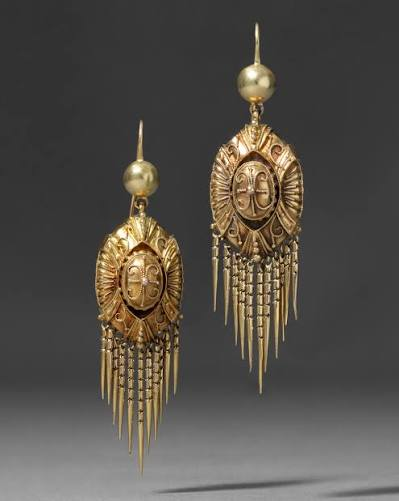
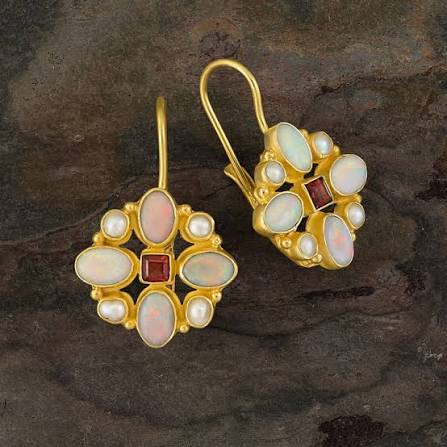
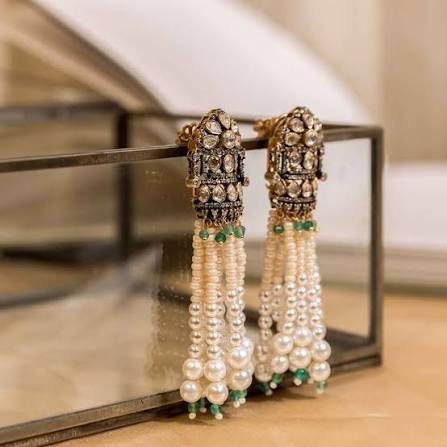
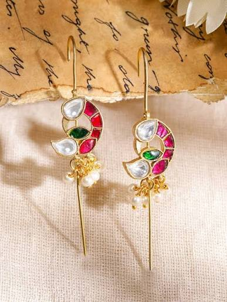

Ancient Times
Earrings were used in ancient civilizations and were commonly made from materials such as gold, silver and precious stones.
HISTORY
From ancient civilizations to modern fashion, earrings have continuously changed with time.

Earrings were used in ancient civilizations and were commonly made from materials such as gold, silver and precious stones.

Jewellery designs changed across different regions and cultures. Earrings could reflect social position, wealth and cultural identity.

Decorative earrings became increasingly popular. Pearls, gemstones and detailed metalwork were used in elaborate designs.

Today earrings are available in countless styles. Minimalist, traditional and statement earrings are all popular.